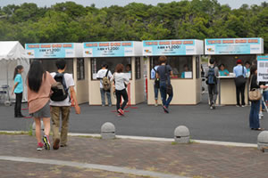
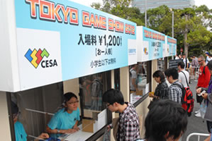
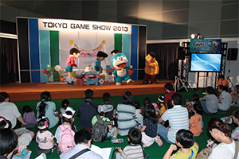
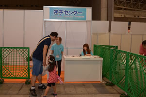

![Business Day 2014.9.18[Thu]-19[Fri] Public Day 2014.9.20[Sat]-21[Sun] @ Makuhari Messe](../../../en/common/images/pc_date.png)


To get to Makuhari Messe, it is convenient to walk (5 minutes) from the nearby JR Keiyo Line, Kaihin Makuhari station, or take a bus from JR Sobu Line, Makuhari Hongo station （Click Here. ）. There will be staffs with a signboard to guide you from Makuhari station to the venue.
"DAY TICKET  " will be sold in time with the first train that leaves from JR Keiyo Line, Kaihin Makuhari station.
" will be sold in time with the first train that leaves from JR Keiyo Line, Kaihin Makuhari station.


You can enter the venue from Hall 1 as well as from Hall 9, but until 10:30, you will not be able to go back and forth between Hall 1-8 and Hall 9. Also, those who have entered from Hall 9 cannot leave the Hall 9 until 10:30.People with ADVANCE TICKET and DAY TICKET should stand in the waiting line for general admission. Please follow the instruction of the staff.
Those who have the "TGS2014 Supporters Club Ticket  " will enter from Hall 1. Go through the baggage check, have your ticket checked at the exclusive reception counter, collect special items (T-shirts ＆ pin badge) and then, proceed to the priority waiting line. It is different from the waiting line for general admission, so please be careful.
" will enter from Hall 1. Go through the baggage check, have your ticket checked at the exclusive reception counter, collect special items (T-shirts ＆ pin badge) and then, proceed to the priority waiting line. It is different from the waiting line for general admission, so please be careful.
The priority admission waiting zone for people with "TGS2014 Supporters Club Ticket" will be removed after the time schedule by the Management Office. After it has been removed, please enter in the same way as the people with general admission tickets. You can receive the special items at the Information in front of Hall 5 on the 2nd floor concourse after 11:30 am.
Although the doors are scheduled to open at 10a.m., people with special type of ticket such as the "TGS2014 Supporters Club Ticket", may be allowed to enter earlier.
Please note that at TGS2014, staying overnight at the venue is strictly prohibited. Anyone who could not follow this rule will not be admitted into TGS2014.
When you enter the venue, all visitors will have their baggage checked for ensuring safety. Bringing in prohibited items into the venue will be strictly forbidden. Try to keep your baggage as small as possible so that baggage check can be carried out easily.
It may take longer for people with a large baggage (for example, those taking part in cosplay) to enter the site. Please come to the site allowing enough time for baggage check.The contents of the plastic bottle may be checked.
At TGS2014, numbered tickets are distributed for trial play of some game titles and events on stage to relieve congestion and to avoid any danger (however, these tickets are limited offer). Numbered ticket distribution spot and how they will be distributed will be announced on the website as soon as they are decided. Please be careful as the way to distribute these tickets and the location of the distribution spot may change from previous years.
Titles and stage events for which the numbered tickets will be distributed shall be announced right before TGS2014. Please read the announcement on the official website - "about the distribution of numbered tickets".
The only place you can change into the costume for cosplay is the cosplay dressing room in Hall 9  （Dressing room：500 JPY ＜including the use of cloak＞）. To change into costumes in the toilets are prohibited as it may cause discomfort to other visitors. Also, hair spray and color spray is prohibited in the site (including the dressing room).
（Dressing room：500 JPY ＜including the use of cloak＞）. To change into costumes in the toilets are prohibited as it may cause discomfort to other visitors. Also, hair spray and color spray is prohibited in the site (including the dressing room).
There are restrictions on the costume you can wear and the props you can use. Our staff will check your costume at the exit of the dressing room. Your cooperation would be appreciated. Please note that we may take away any prohibited props/items.
The dressing room will become very busy before closing time. Be sure to return to the dressing room by 4 p.m. and try to get changed as quickly as possible. (You MUST leave the site by 5 p.m.)
For your information, it is prohibited to come to the site with your costume on or to go outside the site in your costume. (It is possible to go back and forth between Hall 1-8 and 9.)
This year, Family Area is located in Hall 8 .People with children under elementary school age can enter from the Family Area exclusive entrance. However,in case of coming to the venue before 10:30 a.m.,wishing firstly visit a different place, such as the general exhibition and merchandize sales area in Hall 1-7, you need to enter from the general visitor entrance in Hall 1. Also, if you have entered from the Family Area exclusive entrance, you cannot move to a different corner/area until 10:30 a.m.
In Family Area, there are "coupons  " that allow children under elementary school age to enjoy some attractions for free. Please make sure to print out the coupon and bring it to the venue.
" that allow children under elementary school age to enjoy some attractions for free. Please make sure to print out the coupon and bring it to the venue.
For your information, no announcements will be made at the venue. Please be extremely careful so that your children does not get lost.


For elderly people above age 70 and for those with disability certificate, war-wounded certificate, nuclear bombing victim certificate can buy the ticket at a special price （100 JPY including tax）. If nursing care is necessary, one care giver can also buy the ticket at the same price.
In case you are coming to the venue by car, you can use the parking lot next to Makuhari Messe. This parking lot is open from 8a.m. to 11p.m. The charge is 1,000 JPY per day. There is also a 24-hour parking lots nearby （Click Here. ）.
There is no cloak service at the venue. However, there are coin-operated lockers in Makuhari Messe 2nd Floor Concourse . However, there is no guarantee that a locker will be available, so please be warned in advance.
Those of you who are dressing up in a costume (cosplay) can use the exclusive cloak service located in the Cosplay Area in Hall 9 （Dressing room fee：500 JPY＜including the use of cloak＞）.

2002-2014 CESA / Nikkei Business Publications, Inc. All rights reserved.